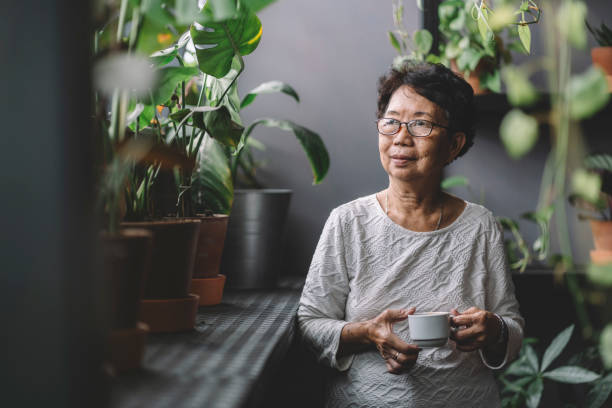

Nossa jornada!
Nosso restaurente Cozinha D'Marie, foi inaugurado em 2007 pela Dona Hiroe Tajiri, que aos impressionantes 86 anos de idade ainda encanta com seu talento na arte da culinária, transmitindo sabedoria e amor a cada prato que prepara.
Nossa missão é especial: oferecer um saboroso prato tradicional chinês com o toque especial de Dona Hiroe. Cada prato reflete a cultura e tradição que sempre foram fundamentais para nós.
Conecte-se conosco!
Ligue para o nosso telefone ou mande uma mensagem para realizar seu pedido. Você também pode enviar um e-mail para esclarecer suas dúvidas e não deixe de nos seguir em nossas redes sociais para acompanhar nossa jornada!
- ☎ Telefone
Nos siga também nas redes sociais!
Localização
O restaurante Cozinha D'Marie está localizado na cidade de XXXXXX-XX, R. XXXXXX, XXX.
Estamos prontos para receber você e sua família!